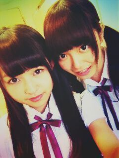
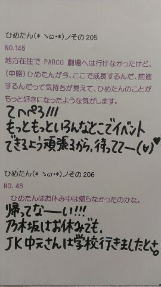
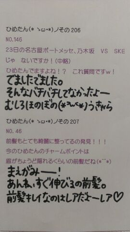

前回のぶろぐ、あったかいコメントいっぱいありがとうございました！
選抜発表報告後のコメントにはいつもハッとさせられる。
今度から何か落ち込んだら、
いや落ち込まなくても週1月1でも
昨日のコメントをひたすら読み返そう
って改めて思った
ぶっくまーくぶっくまーく(*°Д°*)
それでね最近ねっ
(*°Д°*)←この子にはまってるの。
やーんかわいーいー///
写真はなかいさん。
そーいやいつかの
万理華
のぶろぐで
日芽香ー写真撮ってーって言ってたね←
なかいさんふぁんのみなさん
お待たせしました(*^ω^*)/
まりっかはーどうがーん！
4thアンダーの新曲レッスンでした
始まったんだなーって思ったね
みんな頑張ろうねーいえいえおー＊
あ全握のぺあ！
かなりん
(中田花奈chan)よろしくね＊
かなりんとふたりで東京全握。
でじゃヴ。ふふふ
再びかなりんふぁんのみなさん
よろしくお願いします！
んーなんか。短いけど。
こーゆー日記も悪くないな(独断)


(＊´・ω・＊)ひめたん